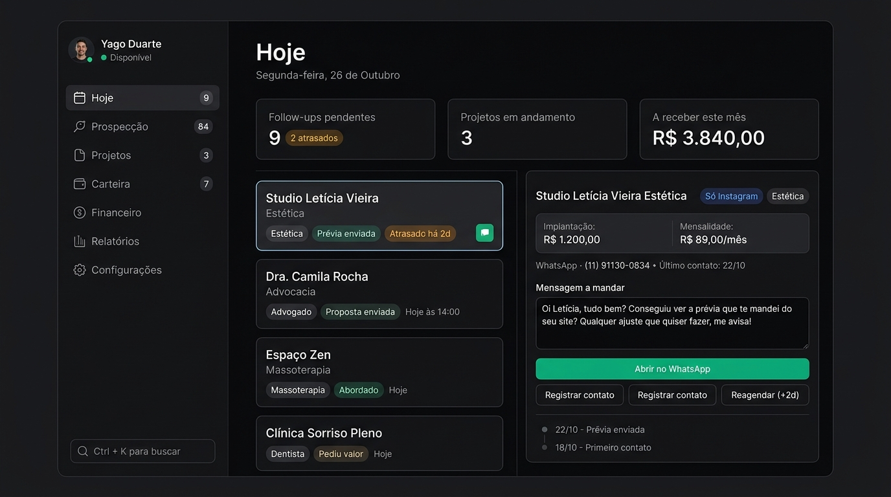

Direção "pé no chão", moderna, focada em produtividade diária e sem firulas.
Fundo escuro profundo (Zinc #09090b), bordas ultra-finas, foco total no contraste e botão de ação verde esmeralda. Perfeito para não cansar a vista durante o dia todo.

Fundo claro suave (#fafafa), cartões arejados, tipografia nítida e hierarquia limpa. Ideal para ambientes claros.